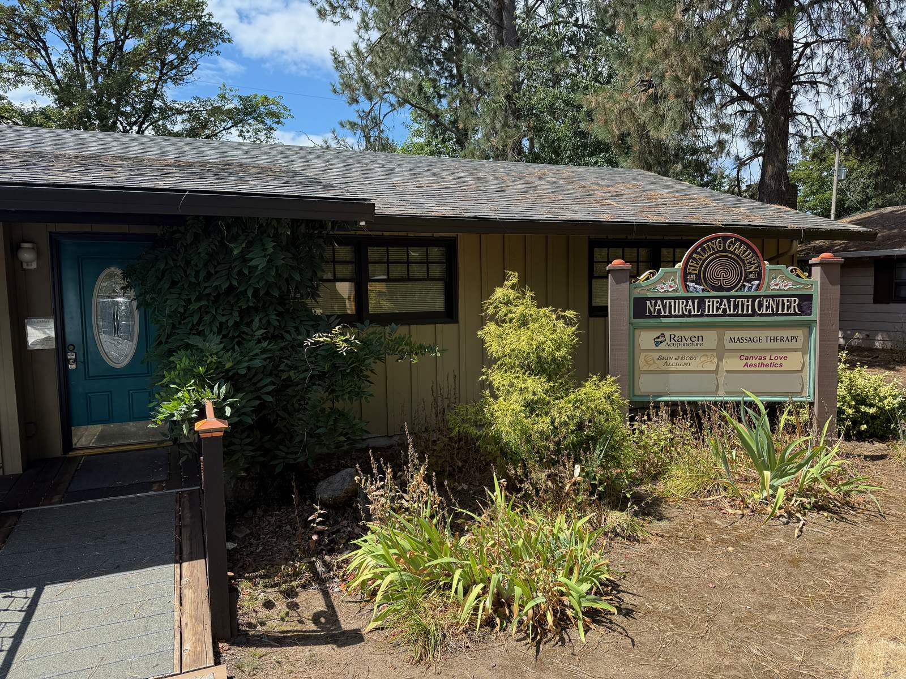
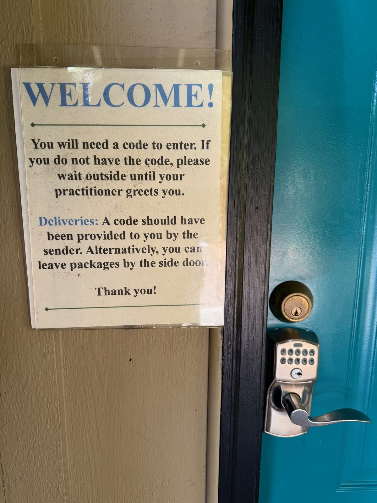
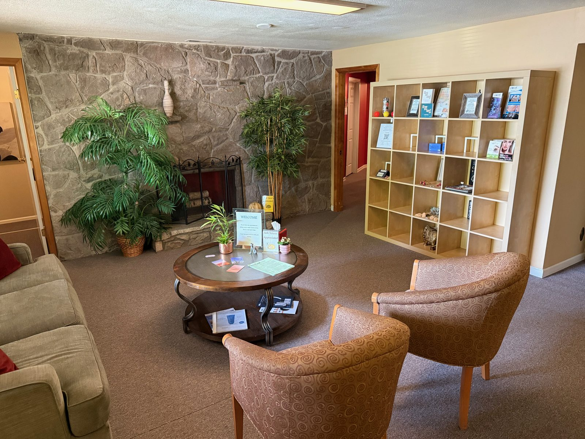
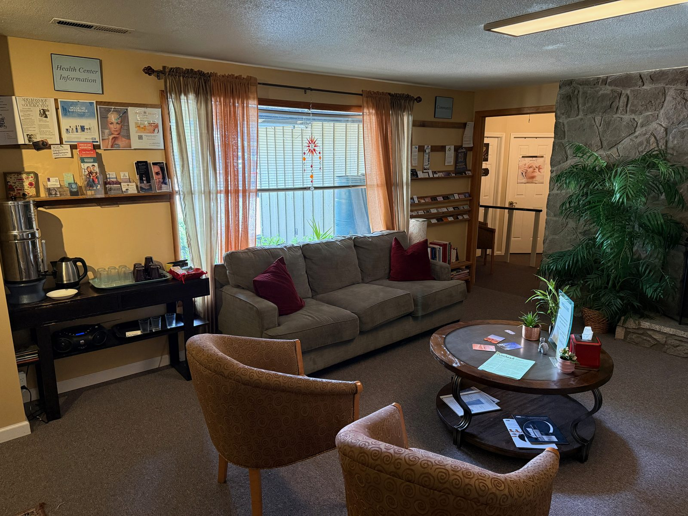
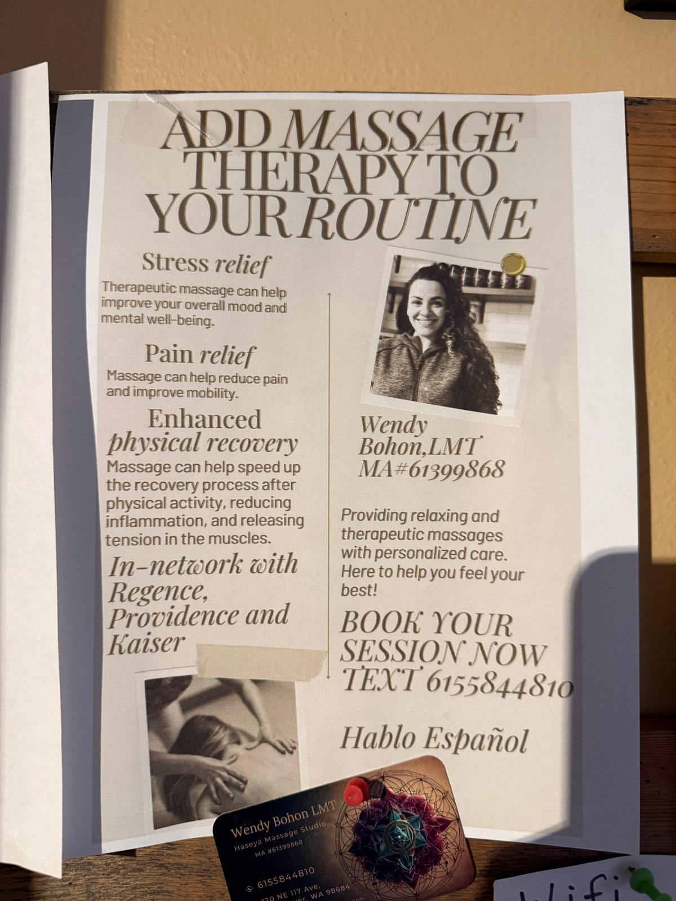

Waiting for Blissful Heaven, at Healing Garden

The house is on NE 117th Avenue in Vancouver, Washington, behind a teal front door with a keypad lock and a laminated sign that says WELCOME and then, immediately, sets the terms: you will need a code to get in, and if you don't have one, you wait outside until your practitioner comes and finds you. That's Healing Garden Natural Health Center, and the practitioner I went to see there today was Wendy Bohon, LMT.

One converted house, four practices
Somebody turned an ordinary ranch house into a small wellness co-op. The sign out front lists Wendy under Massage Therapy alongside Raven Acupuncture, Skin & Body Alchemy, and Canvas Love Aesthetics — four different practitioners sharing one waiting room, one door code, one hallway of closed doors. Wendy is one of several people who work out of the building, not the only name on it, which is worth saying plainly since it's part of why I'd point you to her specifically rather than just the address.


What it's like to wait for your turn
I recorded a voice memo sitting in that lobby, and it's a better account of the room than anything I could reconstruct from memory, so here it is close to verbatim:
So when you're sitting in here waiting for your massage, you smell like essential oils in the air, and soothing music in the background. Air-conditioned comfort. And the lighting is low. And you wait in the lobby while the practitioners finish up in the different rooms, until it's your turn — to go to blissful heaven.
That's most of the pitch, honestly: essential oils, low light, somebody else's soft music, a stone fireplace nobody's lit in August, and a wait that's clearly built to be part of the experience rather than something to sit through on the way to it.
Who is Wendy Bohon, and is she worth booking?
Her flyer is pinned to the board just inside — Wendy Bohon, LMT, license MA#61399868, practicing as Haseya Massage Studio out of the Healing Garden building. She's in-network with Regence, Providence, and Kaiser, which matters if you're used to paying a massage therapist out of pocket, and she books by text rather than a phone tree: 615-584-4810. Hablo Español is on the flyer too.
